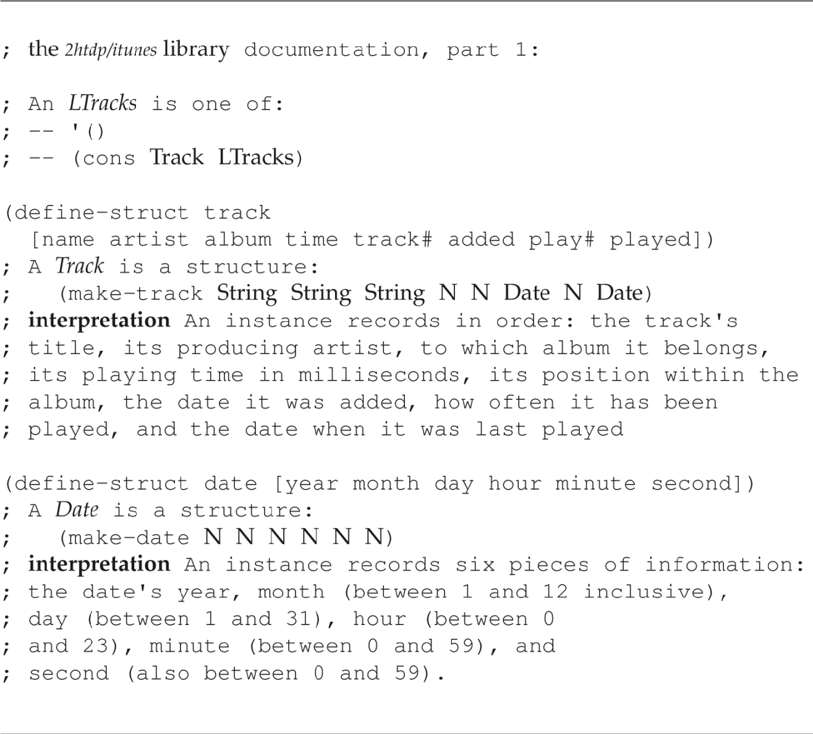
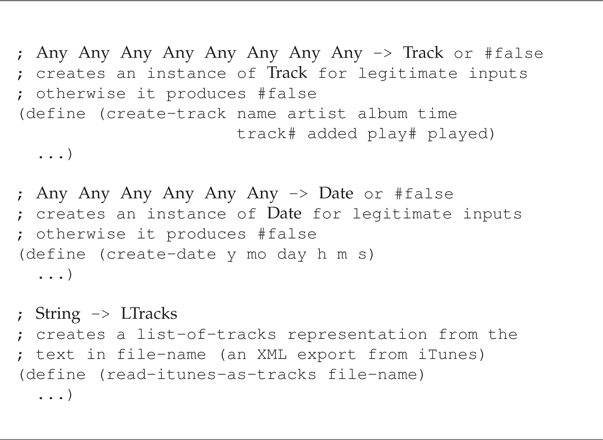
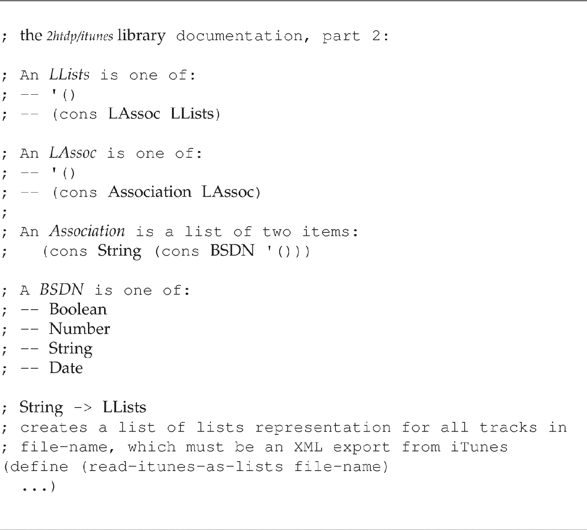

12.2 Real-World Data: iTunes
Apple’s iTunes software is widely used to collect music, videos, TV shows, and so on. You may wish to analyze the information that your iTunes application gathers. It is actually quite easy to extract its database. Select the application’s File menu, choose Library and then Export—and voilà, you can export a so-called XML representation of the iTunes information. Processing XML is covered in some depth by chapter 22; here we rely on the 2htdp/itunes library to get hold of the information. Specifically, the library enables you to retrieve the music tracks that your iTunes library contains.
While the details vary, an iTunes library maintains some of the following kinds of information for each music track, occasionally a bit less:
• Track ID, a unique identifier for the track with respect to your library, example: 442
• Name, the title of the track, Wild Child
• Artist, the producing artists, Enya
• Album, the title of the album to which it belongs, A Day Without
• Genre, the music genre to which the track is assigned, New Age
• Kind, the encoding of the music, MPEG audio file
• Size, the size of the file, 4562044
• Total Time, the length of the track in milliseconds, 227996
• Track Number, the position of the track within the album, 2
• Track Count, the number of tracks on the album, 11
• Year, the year of release, 2000
• Date Added, when the track was added, 2002-7-17 3:55:14
• Play Count, how many times it was played, 20
• Play Date, when the track was last played, 3388484113 Unix seconds
• Play Date UTC, when it was last played, 2011-5-17 17:35:13
As always, the first task is to choose a BSL data representation for this information. In this section, we use two representations for music tracks: a structure-based one and another based on lists. While the former records a fixed number of attributes per track and only if all information is available, the latter comes with whatever information is available represented as data. Each serves particular uses well; for some uses, both representations are useful.
In addition to the 2htdp/batch-io library, this section relies on the 2htdp/itunes library.
Figures 75 and 76 introduce the structure-based representation of tracks as implemented by the 2htdp/itunes library. The track structure type comes with eight fields, each representing a particular property of the track. Most fields contain atomic kinds of data, such as Strings and Ns; others contain Dates, which is a structure type with six fields. The 2htdp/itunes library exports all predicates and selectors for the track and date structure types, but in lieu of constructors it provides checked constructors.

Figure 75: Representing iTunes tracks as structures (the structures)

Figure 76: Representing iTunes tracks as structures (the functions)
The last element of the description of the 2htdp/itunes library is a function that reads an iTunes XML library description and delivers a list of tracks, LTracks. Once you have exported the XML library from some iTunes app, you can run the following code snippet to retrieve all the records:
; modify the following to use your chosen name
(define ITUNES-LOCATION "itunes.xml")
; LTracks
(define itunes-tracks
(read-itunes-as-tracks ITUNES-LOCATION))
Save the snippet in the same folder as your iTunes XML export. Remember not to use itunes-tracks for examples; it is way too large for that. Indeed, it may be so large that reading the file every time you run your BSL program in DrRacket will take a lot of time. You may therefore wish to comment out this second line while you design functions. Uncomment it only when you wish to compute information about your iTunes collection.
Exercise 199. While the important data definitions are already provided, the first step of the design recipe is still incomplete. Make up examples of Dates, Tracks, and LTracks. These examples come in handy for the following exercises as inputs. 
Exercise 200. Design the function total-time, which consumes an element of LTracks and produces the total amount of play time. Once the program is done, compute the total play time of your iTunes collection.
Exercise 201. Design select-all-album-titles. The function consumes an LTracks and produces the list of album titles as a List-of-strings.
Also design the function create-set. It consumes a List-of-strings and constructs one that contains every String from the given list exactly once. Hint If String s is at the front of the given list and occurs in the rest of the list, too, create-set does not keep s.
Finally design select-album-titles/unique, which consumes an LTracks and produces a list of unique album titles. Use this function to determine all album titles in your iTunes collection and also find out how many distinct albums it contains.
Exercise 202. Design select-album. The function consumes the title of an album and an LTracks. It extracts from the latter the list of tracks that belong to the given album.
Exercise 203. Design select-album-date. The function consumes the title of an album, a date, and an LTracks. It extracts from the latter the list of tracks that belong to the given album and have been played after the given date. Hint You must design a function that consumes two Dates and determines whether the first occurs before the second.
Exercise 204. Design select-albums. The function consumes an element of LTracks. It produces a list of LTracks, one per album. Each album is uniquely identified by its title and shows up in the result only once. Hints (1) You want to use some of the solutions of the preceding exercises. (2) The function that groups consumes two lists: the list of album titles and the list of tracks; it considers the latter as atomic until it is handed over to an auxiliary function. See exercise 196.
Terminology The functions whose names starts with select- are so-called database queries. See chapter 23.7 for more details. End
Figure 77 shows how the 2htdp/itunes library represents tracks with lists. An LLists is a list of track representations, each of which is a list of lists pairing Strings with four kinds of values. The read-itunes-as-lists function reads an iTunes XML library and produces an element of LLists. Hence, you get access to all track information if you add the following definitions to your program:
; modify the following to use your chosen name
(define ITUNES-LOCATION "itunes.xml")
; LLists
(define list-tracks
(read-itunes-as-lists ITUNES-LOCATION))

Figure 77: Representing iTunes tracks as lists
Then save it in the same folder where the iTunes library is stored.
Exercise 205. Develop examples of LAssoc and LLists, that is, the list representation of tracks and lists of such tracks.
Exercise 206. Design the function find-association. It consumes three arguments: a String called key, an LAssoc, and an element of Any called default. It produces the first Association whose first item is equal to key, or default if there is no such Association.
Note Read up on assoc after you have designed this function.
Exercise 207. Design total-time/list, which consumes an LLists and produces the total amount of play time. Hint Solve exercise 206 first.
Once you have completed the design, compute the total play time of your iTunes collection. Compare this result with the time that the total-time function from exercise 200 computes. Why is there a difference?
Exercise 208. Design boolean-attributes. The function consumes an LLists and produces the Strings that are associated with a Boolean attribute. Hint Use create-set from exercise 201.
Once you are done, determine how many Boolean-valued attributes your iTunes library employs for its tracks. Do they make sense?
Note A list-based representation is a bit less organized than a structure-based one. The word semi-structured is occasionally used in this context. Such list-representations accommodate properties that show up rarely and thus don’t fit the structure type. People often use such representations to explore unknown information and later introduce structures when the format is well-known. Design a function track-as-struct, which converts an LAssoc to a Track when possible. End